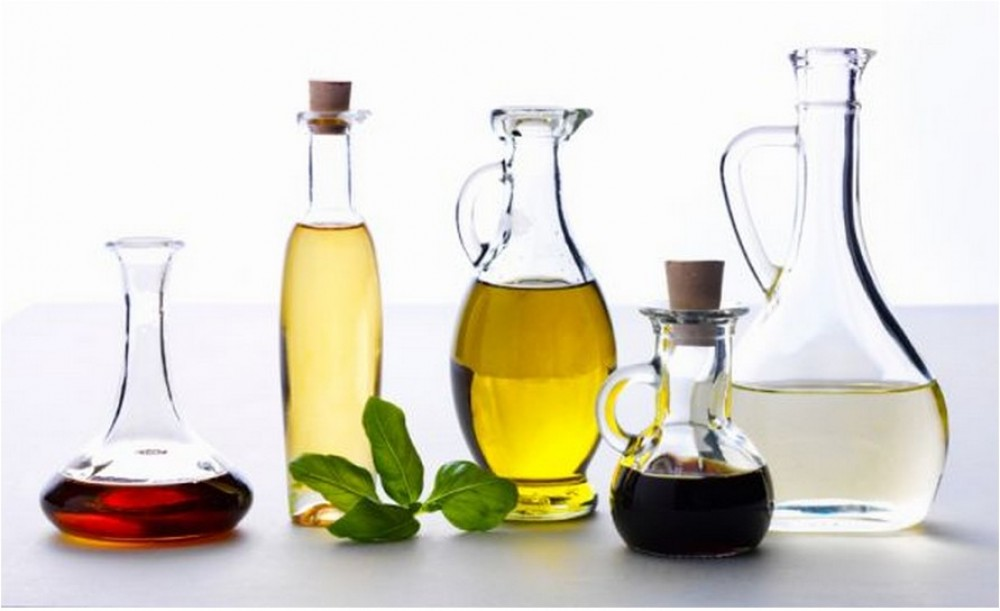

Лечение пищевых отравленийПредупреждение!
Яблочный и другие виды уксуса могут быть опасны для больных, у которых нарушен обмен солей мочевой кислоты. Все виды уксуса противопоказаны при обострении язвенной болезни желудка и двенадцатиперстной кишки, при гиперсекреторной форме гастрита, острых и хронических гепатитах, при остром и хроническом нефрите, нефрозе, мочекаменной болезни.
Пищевое отравление может иметь очень серьезные последствия – энтероколит, гастрит и даже панкреатит. Поэтому при первых же признаках отравления нужно принимать срочные меры. Яблочный уксус при этом оказывается очень эффективным лекарством, ведь это кислота, которая уничтожает в кишечнике болезнетворные бактерии, даже холерные вибрионы. Если его принимать разбавленным, он будет вполне безобидным средством и для тех, у кого есть проблемы с желудком.
Схема лечения отравлений
1. Промыть желудок теплой кипяченой и немного подсоленной водой. Поставить очистительную клизму с добавлением яблочного уксуса (2 ст. ложки уксуса на 2 литра теплой воды). После этого лечь в постель и положить теплую грелку на живот.
2. Приготовить раствор яблочного уксуса в воде (2 ст. ложки на стакан). Пить по 1 ч. ложке раствора каждые 5 минут в течение суток. Ничего не есть.
3. На второй день вновь поставить клизму с разбавленным уксусом и пить раствор яблочного уксуса в течение дня по 1 ч. ложке. Ничего не есть.
4. На третий день начинать есть протертые каши и чай с сухарями. Пить разбавленный яблочный уксус 3 раза в день по 1 стакану (1 ст. ложка уксуса на стакан).
В течение последующих трех дней рацион можно расширить, при этом нужно продолжать принимать по 1 ст. ложке яблочного уксуса, разбавленного в стакане воды.
Язва желудка и двенадцатиперстной кишкиНельзя принимать неразбавленный уксус. Помните, что это – кислота, которая разъедает слизистые оболочки. Хотя у яблочного уксуса рН ниже, чем у обычного, но все же выше кислотности желудочного сока, которая составляет рН2.
Язвенная болезнь – одно из самых распространенных заболеваний желудка и двенадцатиперстной кишки. Развитие язвы провоцирует действие соляной кислоты желудочного сока, поэтому люди с повышенной кислотностью желудочного сока особенно склонны к этому заболеванию. Помимо агрессивного действия желудочного сока причиной язвы является особая бактерия Helicobacter pylori.
Язва представляет собой дефект стенки желудка или двенадцатиперстной кишки разного диаметра (от 0,2 до 3 см) и толщины (может быть на всю стенку желудка или кишки). Язва проявляет себя сильной изжогой, тяжестью в желудке после еды, болью в верхней части живота («под ложечкой»), особенно на голодный желудок и по ночам.
Язвенная болезнь является хроническим заболеванием, которое может прогрессировать и вызывать осложнения – кровотечения и болезни других внутренних органов.
Чтобы язвенная болезнь не обострялась, больному необходимо придерживаться диеты, не употреблять острые и жирные блюда, избегать волнений и стрессов, поскольку провоцируют развитие язвы нервные потрясения.
Вместе с лечением язвы необходимо принимать успокоительные средства. Яблочный уксус можно принимать только вне обострения язвенной болезни. В этом случае он способен укрепить стенку слизистой и уничтожить рубцы на ней, одновременно нормализовав состав микрофлоры.